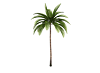
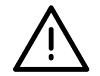

<mat-toolbar color="primary">
  
  <a mat-button routerLink="/insertar">INGRESAR</a>
  <a mat-button routerLink="/modificar">MODIFICAR</a>
  <a mat-button routerLink="/consultar">BUSCAR</a>
  <a mat-button routerLink="/consultar">MODELAR</a>
</mat-toolbar>
<div class="container">
  
    <div>
      <h1>Ingresar Datos</h1>
    </div>

    <div>

      <mat-card class="mat-card" (click)="addCultivo()">
        <mat-card-header class="mat-card-header">
            <mat-card-title>Cultivos</mat-card-title>
                
        </mat-card-header>
      </mat-card>
      <mat-card class="mat-card" (click)="addSemoviente()">
        <mat-card-header class="mat-card-header">
          <mat-card-title>Semovientes</mat-card-title>
          
        </mat-card-header>
      </mat-card>
      <mat-card class="mat-card" (click)="addSiniestro()">
        <mat-card-header class="mat-card-header">
          <mat-card-title>Siniestros</mat-card-title>
          
        </mat-card-header>
      </mat-card>

    </div>
    
</div>